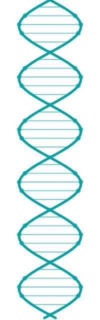
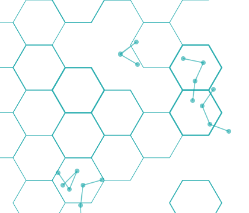

Software Defined Reality
聚焦軟體如何跨越虛擬邊界，成為驅動實體設備的核心大腦。從無人機的飛控演算法、各類載具濾波調校，到機器人邊緣運算與電腦視覺的即時反應，深入探討「軟體定義載具」（SDV）的底層技術與韌體架構。我們將解析程式碼如何突破物理極限，賦予硬體設備持續進化的靈魂。
從軟體定義載具到生成式 AI，
與南台灣的開發者一起把前沿技術談到落地

MOPCON 為南台灣最大軟科技應用研討會，堅持在濁水溪以南舉辦已經長達 14年！ 我們為南台灣每年帶來最前沿且務實的軟科技實踐與應用議程，協助科技從業者本業能力精進、企業宣傳與招募，並鼓勵在地科技社群發展、產業經驗交流，打造企業與科技人的優質互動環境，期待您成為 MOPCON 的重要夥伴，與我們一同共襄盛舉！

本年度主軸為 「From AI to Reality：軟體定義邊界，駕馭物理現實的科技實踐」
當人工智慧（AI）從實驗室的模型訓練，逐步走向成熟的商業化應用，我們的下一步，是讓虛擬的智慧全面走入「物理現實」。
第十五屆大會將以「From AI to Reality」為核心，帶領會眾看見軟體技術的無限延伸。今年大會特別注入「軟體定義載具」（Software Defined Vehicle, SDV）的精神 —看見前沿軟體架構如何跨越螢幕的限制，成為驅動無人機、機器人與智慧物聯網（AIoT）的核心大腦。在這個軟體賦能硬體的時代，程式碼正在改寫實體世界的互動方式。
我們期盼看見 AI 如何深化於系統維運、加速 SaaS 與自動化創新，並與開源精神相結合；更期待看見軟體技術如何突破虛擬的邊界，真正落地並改變我們的現實生活。
聚焦軟體如何跨越虛擬邊界，成為驅動實體設備的核心大腦。從無人機的飛控演算法、各類載具濾波調校，到機器人邊緣運算與電腦視覺的即時反應，深入探討「軟體定義載具」（SDV）的底層技術與韌體架構。我們將解析程式碼如何突破物理極限，賦予硬體設備持續進化的靈魂。
探索人工智慧技術的最前線與發展藍圖。本軌將深入解析 AI 發展與演進、LLM 語言模型現況與 Agentic AI 的自主決策機制，以及從文字生成邁向多模態理解的技術突破。幫助掌握 AI 演算法的底層邏輯與運算效能最佳化趨勢，一窺顛覆未來科技發展的關鍵核心技術。
讓技術紅利真正落地！本軌專注於 AI 與現代軟體工程在商業場景的實戰經驗。從高併發的 SaaS 架構設計、雲端系統部署，到自動化工作流（Workflows）的無縫導入。講者將分享嚴謹的迭代開發流程與架構規劃，展示如何將 AI 概念轉化為解決真實業務痛點的強大生產力。
票種與售票時程即將公布，敬請期待。